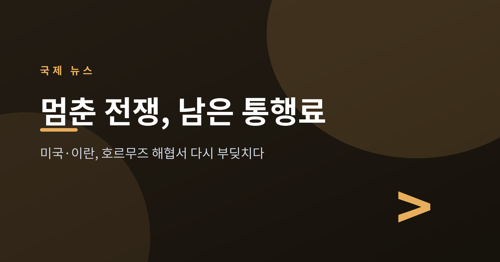
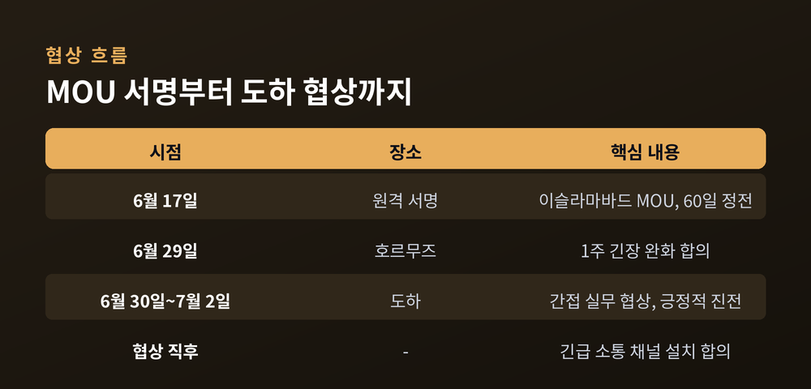
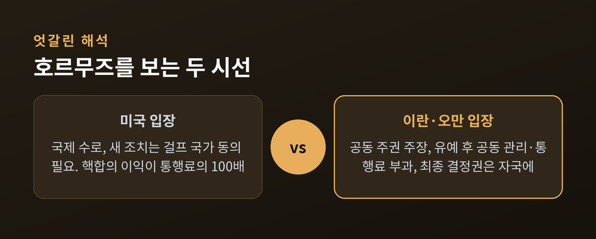
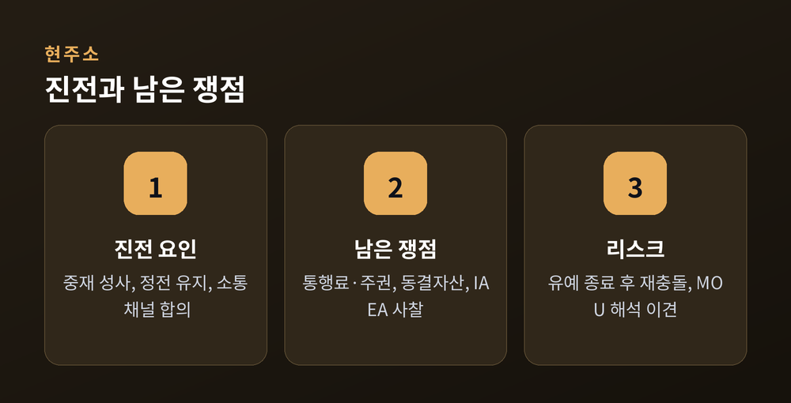

미국·이란, 호르무즈에서 다시 부딪치다

전쟁을 멈춘 합의문에 서명한 지 두 주가 지났습니다. 그런데 정작 협상장에서는 핵이 아니라 '뱃삯'을 놓고 실랑이가 벌어지고 있습니다. 세계 원유의 길목, 호르무즈 해협 이야기입니다.
지난 6월 17일, 미국과 이란은 카타르와 파키스탄의 중재로 '이슬라마바드 양해각서(MOU)'에 원격 서명했습니다. 60일간 정전하고, 미국의 해상 봉쇄를 풀며, 호르무즈 해협을 다시 열기로 한 14개 항목의 큰 틀입니다. 이 60일 안에 핵프로그램과 제재 해제, 동결자산, 3000억 달러 규모의 재건 계획까지 마무리한다는 구상이었습니다.
그 후속으로 6월 30일부터 7월 2일까지 카타르 도하에서 실무 협상이 열렸습니다. 미국과 이란 대표단은 직접 마주 앉지 않고, 카타르·파키스탄을 통한 간접 방식으로 이틀간 논의했습니다. 카타르는 "긍정적 진전"이 있었다고 밝혔고, 양측은 이견을 조율할 '긴급 소통 채널'을 만들기로 합의했습니다.

문제는 호르무즈 해협의 '관리권'과 '통행료'입니다. 지난주 이란은 이 해협을 지나던 상선 여러 척을 공격했는데, 오만 해안 가까이 새 항로가 설정된 것이 발단이었다고 전해집니다.
이란과 오만은 이 해협에 대해 '공동 주권'을 주장합니다. 60일 유예가 끝나면 두 나라가 함께 관리하고 통행료를 걷겠다는 입장으로, 실제 공동 수수료안을 미국에 제출했습니다. 반면 미국은 호르무즈가 국제 수로인 만큼 새 조치에는 걸프 국가들의 동의가 필요하다고 봅니다. 이란은 자국 영해이므로 최종 결정권이 자신들에게 있다고 맞섭니다.
미국은 이란에 "더 크게 보라(Think bigger)"는 메시지를 던졌습니다. 핵합의로 제재가 풀리면 자원 수출로 얻을 이익이 통행료보다 훨씬 크다는 설득입니다. 한 미국 당국자는 그 이익이 통행료의 "100배"에 이를 것이라고 표현했습니다.

6월 29일 양측은 해협의 긴장을 일주일간 낮추기로 합의했습니다. 뒤집어 말하면 그 유예가 끝나는 시점에 다시 충돌할 수 있다는 뜻입니다. 트럼프 대통령은 이란의 상선 공격에 격분해 군사 옵션을 보고받았으나, 협상을 이어가는 쪽을 택한 것으로 전해집니다.
동결자산 문제도 남아 있습니다. 카타르에 묶인 자금의 1차 방출 가능성이 보도됐지만, 미국 당국자는 "합의된 바 없다"며 선을 그었습니다. 여기에 레바논 정전 유지, 국제원자력기구(IAEA)의 핵사찰 등 무거운 쟁점이 60일 시계 안에 얽혀 있습니다.

전쟁의 총성은 멎었지만, 평화의 설계도는 아직 초안 단계입니다. 이미 서명한 합의문의 해석마저 엇갈리는 지금, 관건은 좁은 해협 위 '통행료'라는 작은 문구가 큰 판을 흔들지 여부입니다.
핵심 메시지: 정전은 끝이 아니라 더 어려운 협상의 시작입니다.
세계 원유의 5분의 1이 지나는 이 길목에서, 두 나라가 '더 큰 그림'에 합의할 수 있을지 다음 몇 주가 분수령이 될 전망입니다.